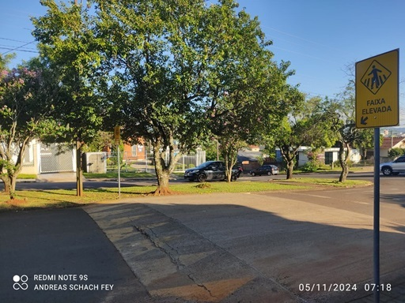
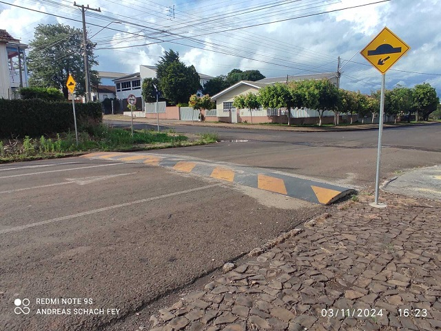
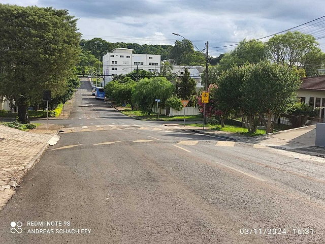
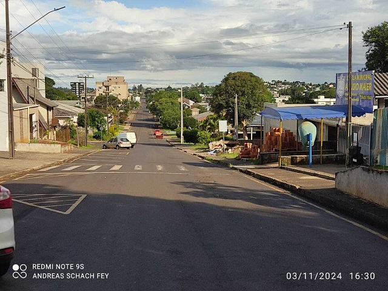
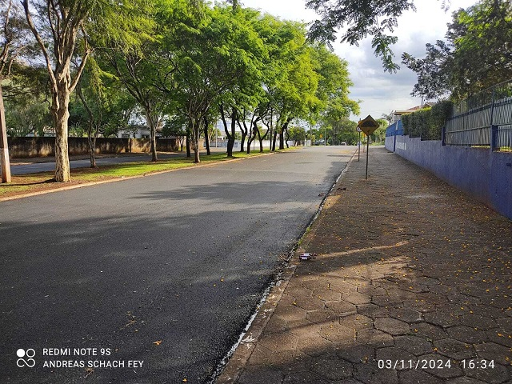

Segurança no Trânsito: Travessia Elevada e Lombada
Descubra como esses dispositivos salvam vidas e como a instalação inadequada pode ser perigosa.
Travessia Elevada
Acesso Seguro para Todos!
Função: A travessia elevada é uma faixa de pedestres elevada, geralmente com a mesma altura da calçada, que facilita a travessia para pedestres, incluindo idosos, pessoas com deficiência e crianças.
Benefício: Além de melhorar a acessibilidade, a travessia elevada obriga os motoristas a diminuírem a velocidade, aumentando a segurança dos pedestres.
Problemas de Instalação
Quando mal dimensionada ou mal sinalizada, a travessia elevada pode causar danos aos veículos e aumentar o risco de acidentes.
Lombada
Reduzindo a Velocidade, Salvando Vidas!
Função: A lombada, também conhecida como redutor de velocidade, obriga os motoristas a reduzirem a velocidade em locais com risco de acidentes, como áreas residenciais e escolas.
Benefício: Força a redução de velocidade e aumenta a atenção dos motoristas, especialmente em locais com grande fluxo de pedestres.
Problemas de Instalação
Lombadas mal instaladas, sem sinalização ou com altura inadequada, podem causar acidentes e danos aos veículos.
Exemplos em Laranjeiras do Sul
Lombadas e Travessias Elevadas Mal Instaladas
Em Laranjeiras do Sul, diversas lomb adas e travessias elevadas foram instaladas de maneira inadequada, com erros de altura, posicionamento e sinalização.
Essas instalações inadequadas têm causado problemas significativos no trânsito, aumentando o risco de acidentes e danificando veículos. Motoristas e pedestres enfrentam dificuldades devido à falta de padrão adequado nas construções.

Essa travessia elevada se encontra-se na rua Avenida Álvaro Natel de Camargo, onde é possível observar que ela não está sendo usada de uma forma correta, pois não há continuidade da travessia do outro lado da avenida.

Essa lombada é encontrada na rua Tiradentes, com 0,10 m de altura, 25% mais alta do que a altura máxima permitida pelo CONTRAN, causando muitos arranhões nos veículos.

Na rua R.Ver.João Rocha Loures, a lombada e a travessia elevada estão a menos de 20m uma da outra, violando a legislação que exige uma distância mínima de 50m.

Em frente à escola Aluísio Maier, não há redutor de velocidade, apesar do grande fluxo de crianças.

Lombada sem pintura na rua Santos Dumont, com sinalização inadequada, dificultando a visibilidade para os motoristas.
Legislação sobre Travessias Elevadas e Lombadas
Descrição: No Brasil, a instalação de travessias elevadas e lombadas é regulamentada pela resolução do Contran (Conselho Nacional de Trânsito), que define os padrões de altura, sinalização e posicionamento para garantir a segurança de todos.
Importância: A obediência a essa legislação é fundamental para evitar problemas de tráfego e acidentes causados por instalações inadequadas.
O que diz o CONTRAN: "Na Resolução 600/16, do Conselho Nacional de Trânsito (CONTRAN), diz que as lombadas devem obrigatoriamente ser sinalizadas e podem ser de dois tipos de tamanho. No tipo 1 devem ter as medidas de 8 cm de altura por 1,5m de largura, no tipo 2 devem ter 10 cm de altura por 3m de largura, ambos com o comprimento igual a largura da rua. E de acordo com a lei devem ser utilizados somente em último caso para a prevenção de acidentes. São exigidos, entre outros, os seguintes requisitos para uma via receber esse tipo de obstáculo: ser via local, ou secundária próxima a escolas, ter declividade inferior a 6 %, ausência de curvas ou interferências visuais que impossibilitem visibilidade"
Resolução 600/2016 - CONTRAN
Vídeo do canal: Escola de Trânsito com Você.
Mais Informações sobre Legislação
O link para RESOLUÇÃO Nº 600 DE 24 DE MAIO 2016 - CONTRAN, que estabelece os padrões e critérios para a instalação de ondulação transversal (lombada física) em vias públicas
O link para RESOLUÇÃO Nº 738 DE 06 DE SETEMBRO 2018 - CONTRAN, que estabelece os padrões e critérios para a instalação de travessia elevada para pedestres em vias públicas
Será que não caberia um esclarecimento do Conselho Municipal de Trânsito, Transporte e Mobilidade de Laranjeiras do Sul - CMTTM, sobre a adequação à resolução N° 600/16-CONTRAN referente as lombadas e a resolução N° 738/18-CONTRAN referente às travessias elevadas instaladas recentemente em Laranjeiras do Sul?
Soluções
Para garantir a segurança no trânsito, é fundamental que as travessias elevadas e lombadas sejam instaladas de acordo com as normas estabelecidas. Isso inclui:
Realizar estudos técnicos para a instalação.
Seguir as especificações de altura e sinalização definidas pelo CONTRAN.